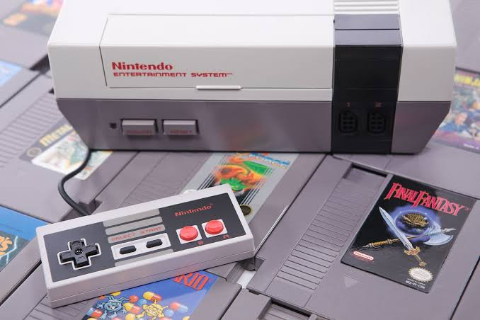
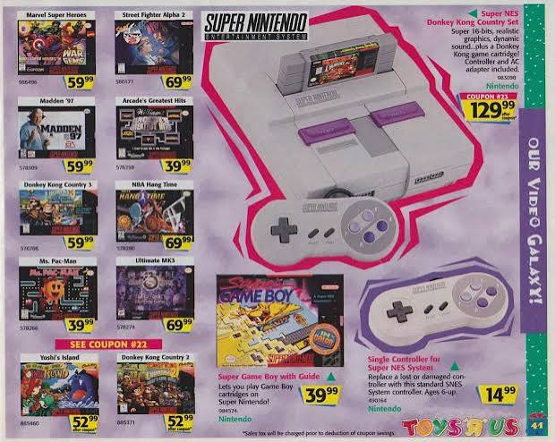
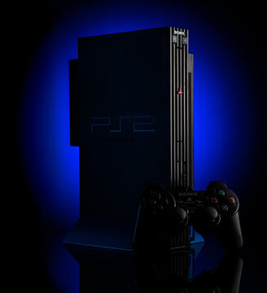

Video Game Consoles That Shaped Gaming
Video game consoles have shaped the gaming industry for generations. Each system introduced new technology and memorable experiences.
Nintendo Entertainment System (1985)
The NES helped revive the video game industry after the crash of 1983. Games such as Super Mario Bros. and The Legend of Zelda became household names and established many gaming conventions still used today.
Super Nintendo Entertainment System (1991)
The SNES improved graphics and sound while introducing classics like Super Metroid, Donkey Kong Country, and Chrono Trigger.
PlayStation 2 (2000)
The PS2 remains one of the best-selling consoles of all time. Its massive game library included titles such as Shadow of the Colossus, Metal Gear Solid 3, and Kingdom Hearts.
Console Images
-

NES -

SNES -

PlayStation 2